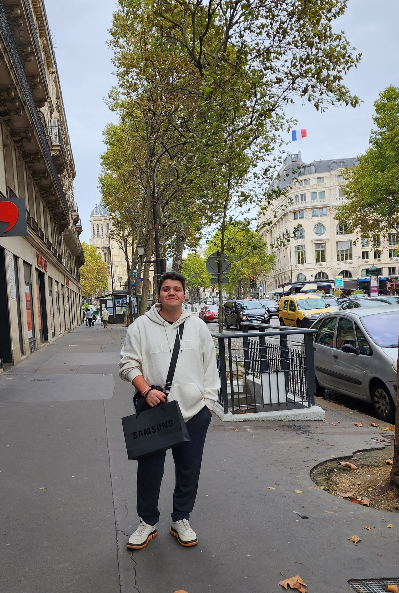

Docente | Maker | Pesquisador
Autodidata desde 2015 e educador desde 2019, transformei a curiosidade por tecnologia em base sólida (hardware, sistemas, IoT, cibersegurança e robótica) lecionando e estruturando o conhecimento com graduações em Análise e Desenvolvimento de Sistemas, Jogos Digitais e Engenharia da Computação (mais especializações). Movido pela prática e pela troca contínua, busco na 42 o ambiente ideal para consolidar minha transição definitiva para o desenvolvimento de software, unindo autonomia, projetos reais e colaboração.
